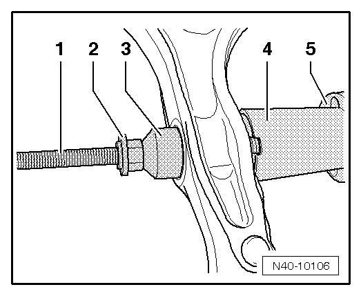
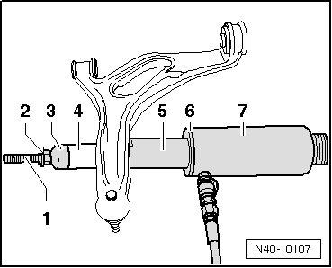

Lower Control Arm Bonded Rubber Bushing, Strut Connection
Lower Control Arm Bonded Rubber Bushing, Strut Connection
Special tools, testers and auxiliary items required
• Assembly tool (T10230)
• Hollow piston cylinder (VAS 6179)
• Hydraulic press (VAS 6178) with pressure head (T10205/13)
• Engine and transmission jack (VAG 1383 A)
• Torque wrench (VAG 1332)
• Socket (T10188)
Removing
- Remove wheel.
- Remove lower control arm. Refer to --> [ Lower Control Arm ] Removal and Replacement.
- Attach tools onto lower control arm, as shown in illustration.

1. Threaded spindle (T10230/1)
2. Nut (T10230/2)
3. Press piece (T10230/13)
4. Tube (T10230/5)
5. Thrust plate (T10230/7) and hydraulic press (VAS 6178) with pressure head (T10205/13)
- Press out bonded rubber bushing.
Installing
- Attach tools onto lower control arm, as shown in illustration.

1. Threaded spindle (T10230/1)
2. Nut (T10230/2)
3. Press piece (T10230/13)
4. Bonded rubber bushing
5. Tube (T10230/5)
6. Thrust plate (T10230/7)
7. Hydraulic press (VAS 6178) with pressure head (T10205/13)
- Press in bonded rubber bushing flush.
- Use clear areas in tube (T10230/5) to observe pressing sequence.
- Install lower control arm. Refer to --> [ Lower Control Arm ] Removal and Replacement.
- Install wheel and tire. Refer to --> [ Wheel Bolts, Tightening Specification ] .
- Perform vehicle alignment. Refer to --> [ Wheel Alignment ] Wheel Alignment.